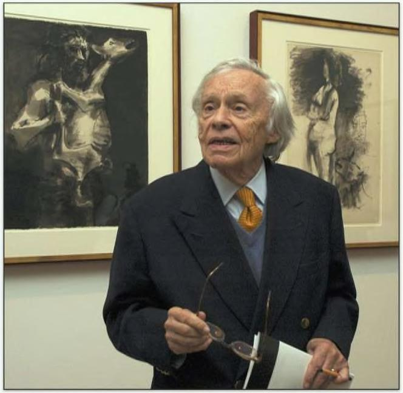

Đ CUỐI CÙNG. BẠN VẬN THẮNG Bạn có thể sai nữa số lần nhưng vẫn thắng “Tôi đã bỏ qua thứ này trong 30 năm. Tôi nghĩ một phép toán đơn giản à, một số dự án hoạt động và một số thì không. Không có vào một trong hai. Chỉ cần tiếp tục.” ý do gì để tin —rad Pitt nhận Giải thưởng của Hiệp hội Diễn viên điện ảnh Heinz Berggruen chạy trốn khỏi Đức Quốc xã vào năm 1936. Ông định cưở Mỹ, nơi ông học văn chương tại ÚC Berkeley. rong hầu hết các tài khoản, ông ấy không có gì đặc biệt khi còn trẻ. Nhưng đến những năm 1990, Berggruen là một trong những nhà kin| doanh nghệ huật thành công nhất mọi thời. Năm 2000, Berggruen đã bán một phân bộ sưu tập đồ sộ của Picasso, Braque, Klee và Matisse cho chính phủ Đức với giá hơn 100 triệu euro. Đó là một món ời đến mức người Đức thực sự coi đó là một khoản quyên góp. Giá trị thị rường của bộ sưu tập là hơn 1 tỷ đô la. Một người có thể thu thập số lượng lớn các kiệt tác là một điều đáng kinh ngạc. Nghệ thuật thì khó đo lường. Làm sao ai có thể lường trước được, thuở sơ khai, hứ qì đã trở thành tác phẩm được săn lùng nhiều nhất của thế kỷ? ạn có thể nói 'kỹ năng”. ạn có thể nói may mắn. (ông ty đầu tư Horizon Research có lời giải thích thứ ba. Và nó rất phù hợp với các nhà đầu tư. “Những nhà đầu tư lớn đã mua một lượng lớn tác phẩm nghệ thuật," công ty viết. “Một tập hợp con của các bộ sưu tập hóa ra là những khoản đầu tư tuyệt
